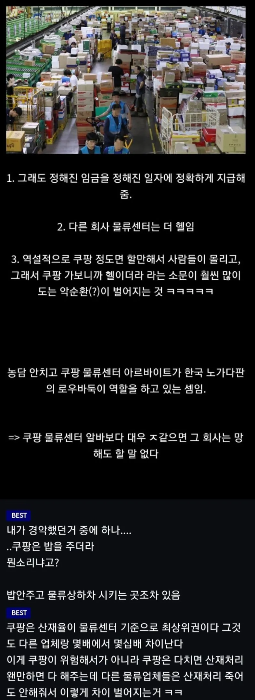

https://www.fmkorea.com/best/10307185845

https://www.fmkorea.com/best/10307185845

지랄 ㅋㅋㅋ 남녀차별 보고싶으면 가라
쿠팡 선동이지 이샛키들은 지들이 꿀리면 미국기업 지들이 유리하면 한국기업이러는 샛키들임
쿠팡은 회사가 2곳임 쿠팡풀필먼트(cfs) 쿠팡로지스텍스(cls) 풀필먼트가 센터 로지스텍스가 캠프인데 캠프가 일 존나 힘들고 악명높음 밥도 센터만주고 캠프는 밥도안줌
산재 회사승인안받게된지 얼마나 됐는데...
다만 꼬투리 최대한 잡아 방어를 하지.
방어해도 법원가면 왠만하면 근로자 승
아다르고 어다른 느낌인데.
1.좋은회산 산재올리면 방어안하고 받아줌
2.안 좋은회산 최대한 꼬투리잡아 방어함
전에 있던회사는 1에 가까웠는데
지금회사는 2임 월급도 말장난많이하고
다시 1로 이직 생각중
딱 물류센터에 일손 필요할 시즌에 적절하게 올라오네
쿠팡이 마음에 들지는 않지만 청년 취업에 꽤 많은 기여를 하고 있다는 사실은 인정해야 한다고 생각해
로우바둑이는 뭔소리지? 놀음하는 그 바둑이 말하는것같은데?
로우바둑이가 피씨방순위 순위권에 꾸준히 라인을 형성중이라 망겜과흥겜 구별라인중 하나로 씀
한겜 말하는거구나 그러면 피씨방순위의 한겜로우바둑이이라고 했어야지 뜬금없이 로우바둑이하면 나처럼 못알아먹는 사람 태반일텐데 저새끼도 참 배려없는새끼네
난 알겠던데..
대부분 이해하는데
커뮤짬이 많이 부족하구나.
혹시 서브웨이 걔냐?
경험자로써 딱 정리해줌
1. 돈을 바로줌 칼같이 다음날 바로줌
2. 근무강도가 씹헬까진 아님 야가다랑 상하차같은거 잘못걸리면 어제 제대한 22살도 추노하는데 그정도아님
3. 십히키아싸 최적화 인간관계없이 지할거하다 집에감
이게 제일큼
근데 남자는 여자보다 3배 힘들어서 가지마라
운전직 쿠친이라고 모집한 인원들도 운전 만 하는게 아니라 남는 시간은 현장 투입되서 같이 라인에서 일 함ㅋㅋ
현장8 사무2정도 되고 여기서 말하는 현장8은 남자 기준 상하차정도 해야하는 수준임
사무실만 지키는 꿀통이 되고 싶다면 3년정도 상하차 계약직 한다고 생각하고 그마저도 센터에 따라 퇴사할때까지 상하차 한다고 생각하면 됨